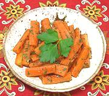

|
Carrots with HerbsSpain - Andalusia - Zanahorias Aliñadas | ||||
| Makes: Effort: Sched: DoAhead: |
1 # ** 2-1/2+ hrs Best |
This dish is popular in tapas bars all over Spain. It is made with many variations, so feel free to change the spicing and herbs to your preference. | |||
|
|
1 1/2 ------ 1/4 1 1/4 2/3 1/8 ------- 2 1-1/2 3 |
# T --- t t t t t --- cl T T |
Carrots Parsley, flat -- Spices Cumin seeds Oregano, dry Red Pepper flake Salt Pepper --------- Garlic Sherry Vinegar (1) Olive Oil, ExtV |
Make - (2-1/2 hrs min, - 20 min work)
|